Recap
Let's go over a recap of everything we've covered so far.
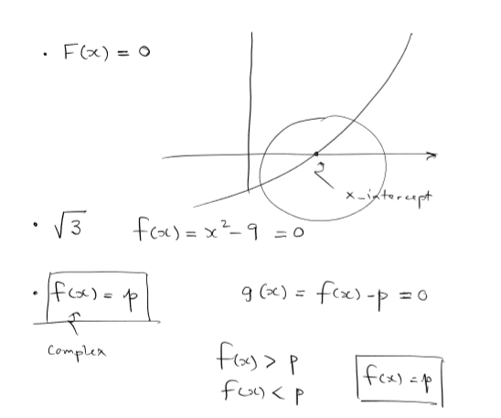The first is root-finding. Here we find the root for x2 - 9 = 0, which is the square root of 3. We can represent this both through graphs and through equation.
We then went over three major methods to keep in mind for root-finding (Taylor expansion is not included below, but it also works as well).
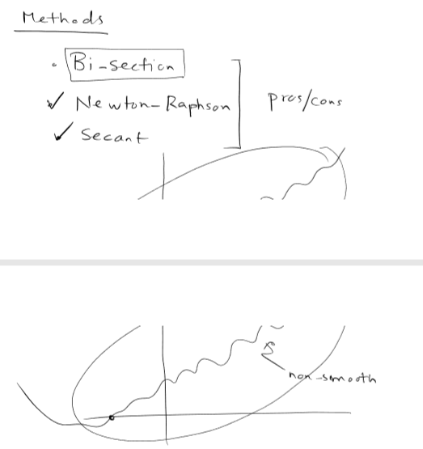Then, we looked at curve-fitting. Given a set of datapoints, we can draw any number of polynomial functions that go through all the points. We want, however, to get the most optimal polynomial function, the one with the least error.
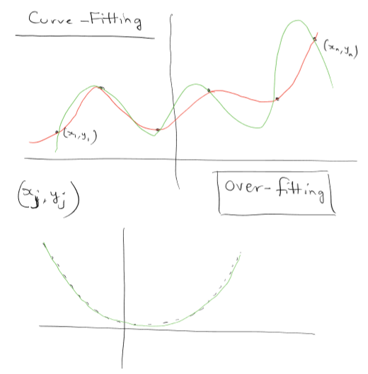We also don't want to overfit, which is a very prominent problem that we can easily fall into.
There are a couple of easy polynomial functions that we all know, "families," if you will. These include linear, parabolic, cubic, etc...
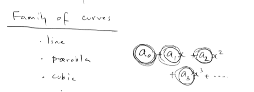These make it easier to categorize and fit functions to datapoints, as many real-life scenarios can be approximated by sunch simple functions.
MATLAB-specific: it is a good idea to note that MATLAB has a function called fminsearch, which essentially uses grid-searching (brute force) to find the roots.
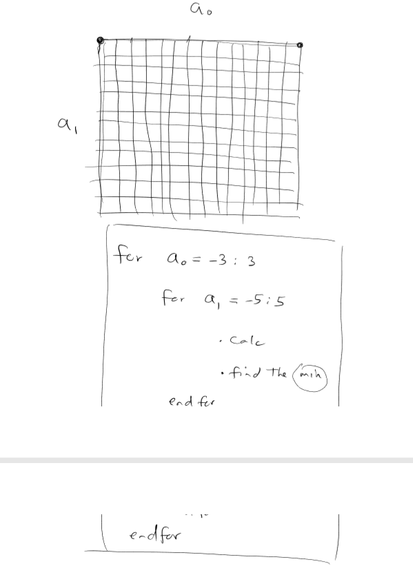 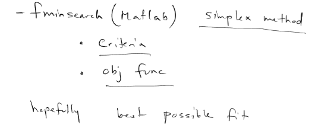Lastly we went over optimization.
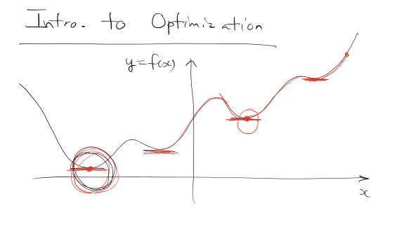The main idea is to find the critical points of the function, which include minimum (global and local), maximum (global and local), and saddle points. Optimization is a topic heavily covered in calculus classes, so we will not go too in-depth in those. All of the topics covered in calculus are very applicable to IEOR. Here is a quick illustrated review:
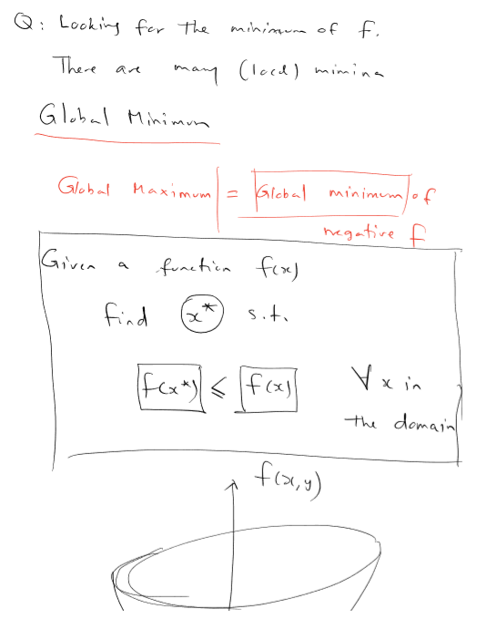 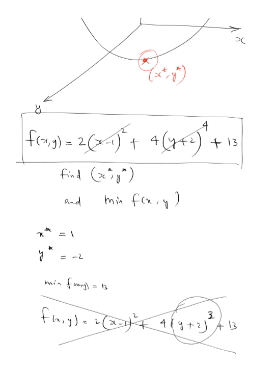 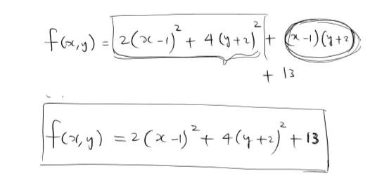Lecture 4
Gradient Descent
As left off in Lecture 3, let's look more deeply into the different types of descent. The first of these is Gradient descent, which is named after the idea of calculus gradients:
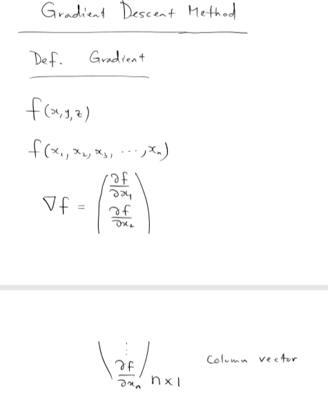Here is an example of partial derivatives, with respect to x and y. These are derivatives of the function f(x,y) = 2x2y3.
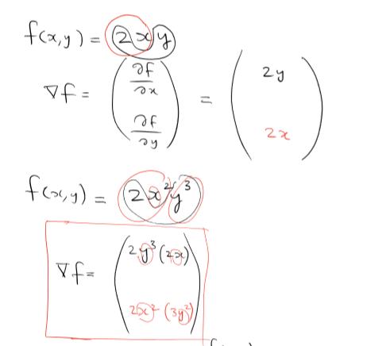Here is a graph of that function. This is looking from the side of the graph.
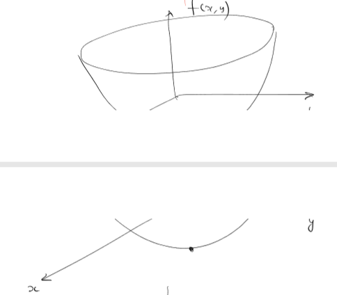Illustrated below is a contour-map of this graph. This is looking from above the graph. The arrows you see in red is the drawn gradient (the partial derivatives).
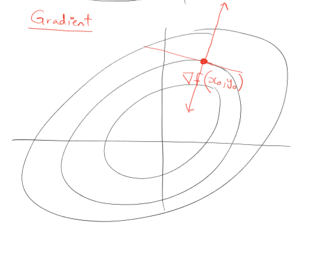 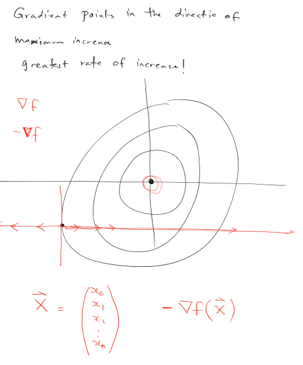Adaptive delta/Machine-learning
To go over more of machine-learning and an adaptive delta, let's revisit this equation again. This is the general equation for vanilla gradient descent (vanilla just means without any extra parameters or sample specifications).
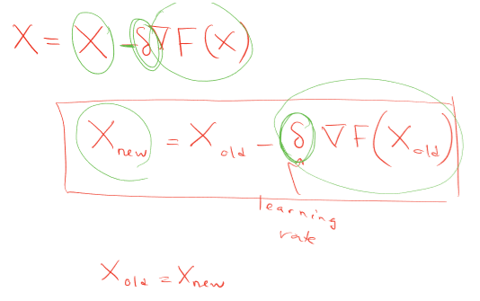The choosing of delta at each iteration is the key to finding an increasingly-accurate curve-fitting function. If it is too high, the function may not converge. If it is too low, it may converge too slowly (too expensively).
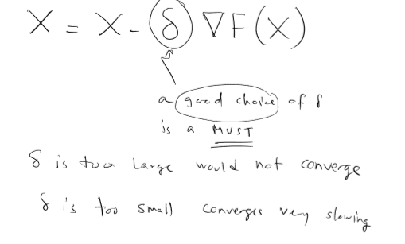The different methods people have come up with for machine-learning in order to make it less-biased and more accurate are:
- Having various different starting points
- Having randomization (stochastic)
- Having a loss function (that may have different weighting)
The last question is: how do we make delta accurately adaptive?
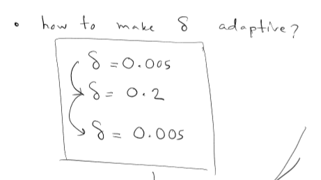 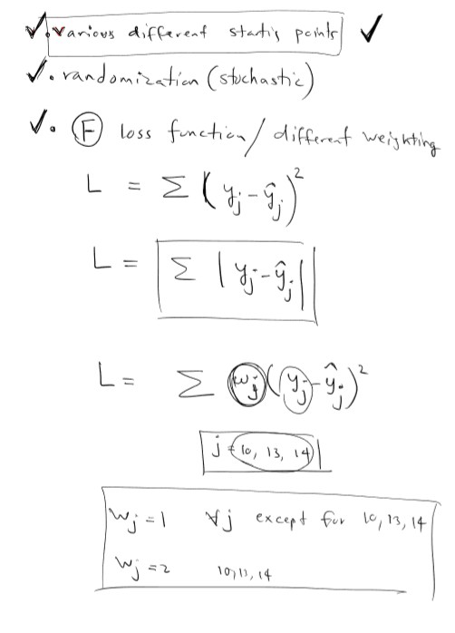We use different descent methods: Vanilla Gradient Descent, Stochastic Descent and Mini-batch descent. These will be described in Lecture 5.
Take a look at Professor Hirsa's notes in a pdf: Lecture 4 Notes